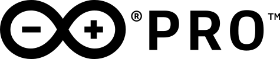

CONNECT
Click the connect button to connect your device

📦 Giro relativo
Roll: -
Pitch: -
Yaw: -
🚀 Accelerometer
💫 Gyroscope
🌡 Temperature -
°C
💧 Humidity -
%
⛅ Pressure -
kPa
🏠 Indoor Air Quality -
🌱 Co2 Value -
💨 Gas Value -